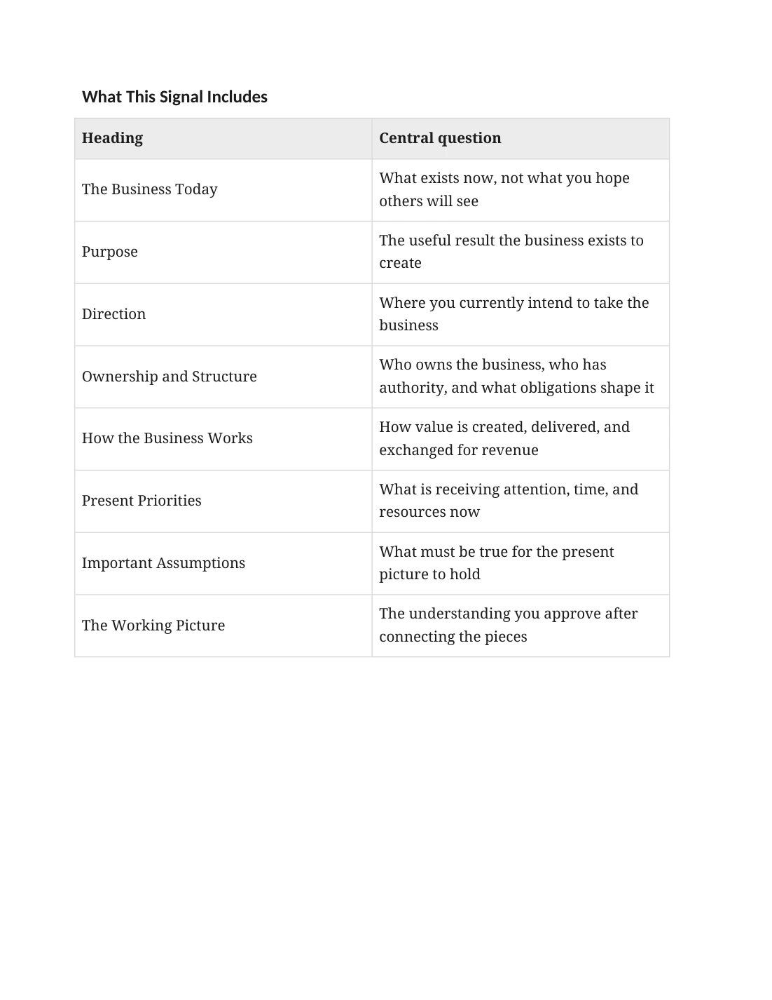

Purpose and direction: areas to examine
Manuscript page 21

Read page text
What This Signal Includes Heading Central question The Business Today What exists now, not what you hope others will see Purpose The useful result the business exists to create Direction Where you currently intend to take the business Ownership and Structure Who owns the business, who has authority, and what obligations shape it How the Business Works How value is created, delivered, and exchanged for revenue Present Priorities What is receiving attention, time, and resources now Important Assumptions What must be true for the present picture to hold The Working Picture The understanding you approve after connecting the pieces